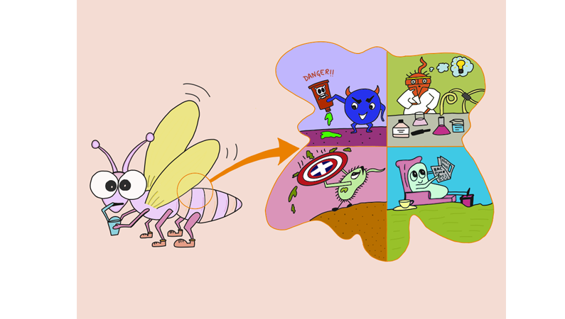

Insect Microbiome: Comprehending The Physiology And Behavior
April 1, 2021 11:50 am IST

A microbiome is the community of microorganisms living together in a particular habitat. Several types of microorganisms living together inside a host are described as Microbiota. In fact, the host and the microbiota together form a discrete ecological unit known as holobiont. These organisms may be symbiotes or commensals. Their composition is determined by the diet and environment of the organism. The microbiota affects many processes of a host; and plays a vital role in an organism’s health. Disturbances in the composition of microbiota often lead to diseases. The study of the microbiota of an organism can be crucial in its ecological study.
Class Insecta is the largest class in the kingdom Animalia, they are found in almost all habitable places on Earth (1). Diverse habitats and environments give rise to very diverse microbiota and unseen relations between hosts and their microbiota. Microbes may be beneficial or harmful to an insects’ fitness, endosymbionts tend to depend on the insect hosts to obtain nutrients, however, they can also provide fitness advantages in nutritional provisioning, overcoming host defenses, and protection from pathogens (3). But, microbes might also be pathogenic, reducing the viability and causing diseases. Studying this microbiota can be crucial in studying insects’ ecology and physiology, discovering new relations and physiological effects on the hosts.
It has been estimated that the insect gut contains ten times more microbes than the total cells of the insect and 100 fold more microbial genes than animal genes(5). Some insect species have a much more diverse microbiota as compared to other species, this variation might imply the differences in the lifestyles of the insects being compared, if we look at the green bottle fly's microbiome, it shows high diversity compared to other species such as fruit flies or mosquitoes, reflecting the lifestyle of green bottle fly, say, breeding and living by animal manure and/or decaying organic matter rich in microorganisms. Also, the composition of the microbiota of green bottle flies is seen to vary with seasonal change and temperature. Some studies have found that predominance of a particular genus of bacteria (Genus Ignatzschineria) at the larva stage of certain flies may be important for the metamorphosis of insects, due to the strong chitinase activity of the bacteria (6). Certain behavioural changes have also been seen to occur in some insects due to the parasites present in their body as in the case of ants. When ants feed on the slime of a snail, they may ingest the eggs of liver flukes present in it, and the liver flukes after hatching migrate to the ant's brain and “orders” them to occupy positions on plants which can be eaten by cows. When these cows consume the ant, along with the flukes present in the ant's body, the flukes migrate to the cow’s liver and infect it(10).
Done with the overview, now let’s move to a more detailed scenario: the gut microbiota of insects. The gut microbiota of insects plays a crucial role in the growth, development, and environmental adaptation to the host insects, by providing them essential amino acids, B vitamins, and sterols for fungal partners. Several studies have brought various applications of the gut microbiome in insects to light. In case of Tse-tse fly, the Wigglesworthia species present in the midgut of the insect is known to code for several vitamin biosynthesis pathways that supplement the blood-specific diet of tsetse (7), and the termite-specific gut microbiome allows the termites to digest the wide variety of lignocellulosic biomass including wood with high lignin content (9). Along with fitness they also protect hosts against pathogens, parasitoids and other parasites by modifying the immune system or synthesizing specific toxins(8).
Although the insect microbiota has only been studied for a tiny number of insect taxa, studies clarify that these microorganisms are critical for the nutrition, physiology, immune responses, and pathogen resistance of many species (2). Therefore, further understanding and study of microbiome in insect vectors can serve the purpose for reducing disease transmission in humans. Also, greater understanding of the abundance and ecological relations of insects will help in comprehending and promoting their conservation.
References: